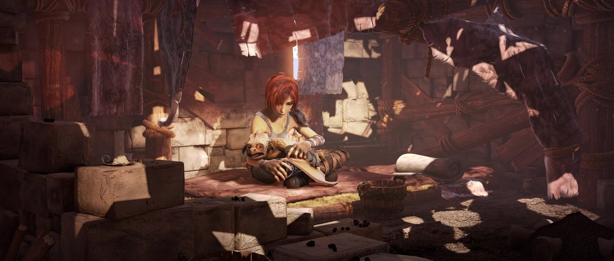

连续故事与情绪弧线
长版取原片8–136秒：争食、火车危险、矿车追逐、空中争抢、失落与和解。短版取原片72–104秒的连续动作，不人为重排。

Sol 内容 57.3/90；dpsk 28.8/78已评子项，另12分缺项。 Qwen3.8曾未通过静音定位校验；本次按用户要求展示未校准辅助评分，逐项计算公开。两模型客观混音项均6/6，工程等门槛通过。
评分范围与局限 ↗长版 · 6.1 Sol · 128秒
原片音轨含配乐与音效，仅供对照；参试模型未收到原声，不按与原配乐的相似度评分。
长版取原片8–136秒：争食、火车危险、矿车追逐、空中争抢、失落与和解。短版取原片72–104秒的连续动作，不人为重排。
不提供原片声音、候选曲目、动作标记或参考配乐。各模型独立联网搜索允许改编发布的音乐，在60次实际HTTP请求内制作。
长短版都要有进入、发展和结束；交付MP4、48kHz/24bit WAV及离线可复现的REAPER工程、素材和加工来源链。
两模型实际接收图像并使用音频分析工具，接口无原生音频或视频输入。媒体构建、分析和评测在服务器Docker完成。
Qwen3.8 未通过此前静音定位校验，本次按用户要求提供未校准辅助分。单版与联合判词也有矛盾；原文保留。客观混音项6/6。
| Qwen辅助评测 | 得分 | 已评满分 |
|---|---|---|
| 叙事与动作响应 | 23.4 | 35 |
| 音乐剪辑 | 25.1 | 40 |
| 短版适配 | 8.8 | 15 |
| 混音（含客观6分） | 9.8 | 10 |
| 实测 | 128秒 | 32秒 |
|---|---|---|
| 积分响度 / LUFS | -16.61 | -16.95 |
| 真峰值 / dBTP | -1.77 | -1.42 |
| WAV / MP4 同混音 | 通过 | 通过 |
Qwen3.8 未通过此前静音定位校验，本次按用户要求提供未校准辅助分。单版与联合判词也有矛盾；原文保留。客观混音项6/6。 长版仅返回13组动作评价，冻结表要求14组，12分动作项无法完整校验；缺项不计零。
| Qwen辅助评测 | 得分 | 已评满分 |
|---|---|---|
| 叙事与动作响应 | 5.8 | 23 |
| 音乐剪辑 | 11.8 | 40 |
| 短版适配 | 11.2 | 15 |
| 混音（含客观6分） | 10.0 | 10 |
| 实测 | 128秒 | 32秒 |
|---|---|---|
| 积分响度 / LUFS | -16.72 | -16.73 |
| 真峰值 / dBTP | -1.19 | -1.18 |
| WAV / MP4 同混音 | 通过 | 通过 |
其REAPER直接输出与成片WAV不同；按交付说明运行随包母带脚本后，两版均在预设容差内独立复现。直接对比与完整流程对比均保留，未修改模型工程。
Qwen3.8和独立Qwen3.5路线都错定位已知静音窗口。初次失败后停止评分，记录完整保留。此后用户明确指定Qwen3.8，本次另立辅助评测计划，直接评作品；未重抽控制，也未宣称校验通过。
Qwen3.8 校验记录 ↗Qwen3.5 校验记录 ↗分段诊断计划采用原生音频和冻结的视觉事件文字，但首个校验请求两次返回HTTP429，未得到作品评分。本次Qwen3.8匿名评审两模型各自的完整长版、短版与两版关系，共6个请求；不提供原片声音、模型身份或制作说明。未进行或声称人工专家听审。
本次Qwen3.8评测计划 ↗本次请求与完成记录 ↗分段诊断计划 ↗接口失败记录 ↗内容分＝叙事35＋音乐剪辑40＋短版15，满分90；辅助总分再加可闻瑕疵4和客观混音6，满分100。一般系数长版60%＋短版40%，动作组内等权平均，联合两项单独计算。dpsk长版只返回13组而非14组动作评价，12分动作项留空，仅公布其余78分内容小计，不以缺项为零。Qwen单版与联合判词还存在矛盾；时间定位或音画判断可能有误，正式专家分仍为空。旧版Sintel分数不适用于本题。
这个面板供你试听后逐项填写，不是自动评分。一般项按长版60%＋短版40%；动作响应按冻结事件组等权平均；短版两项联合判断。全部系数与依据填齐后才计算个人总分。
q＝0 失效 · 0.25 多数关键处失效 · 0.5 基本成立但有明显问题 · 0.75 整体专业 · 1 出色且无实质问题；步长0.05。没有证据时留空。
个人填写不会上传，不会自动改写网页公开结果。
| 子项 | 满分 | Sol | dpsk |
|---|---|---|---|
| 故事与关系弧线 | 12 | 8.04 | 3.00 |
| 动作群与音乐响应 | 12 | 8.31 | 缺项未评 |
| 喜剧时机、动态与留白 | 11 | 7.04 | 2.75 |
| 音乐结构与乐句 | 12 | 7.56 | 3.00 |
| 拼接、处理与过渡 | 12 | 7.08 | 3.00 |
| 选材与音乐语言统一 | 10 | 6.40 | 2.50 |
| 结尾与释放 | 6 | 4.08 | 3.30 |
| 两版共同身份 | 5 | 3.75 | 3.75 |
| 短版独立结构 | 10 | 5.00 | 7.50 |
| 无明显音频瑕疵 | 4 | 3.84 | 4.00 |
| 积分响度 | 1.5 | 1.50 | 1.50 |
| 真峰值 | 1.5 | 1.50 | 1.50 |
| 交付混音一致性 | 3 | 3.00 | 3.00 |
画面：Caminandes: Llamigos (2016)，Blender Studio / Blender Institute；导演 Pablo Vazquez。CC BY 4.0。题目截取、缩放、去声，模型另配音乐。
音乐：Kevin MacLeod（incompetech.com），CC BY 4.0。两模型分别作取段、重排、音量和滤波等处理；完整改编与署名保留在交付中。
新增原片音轨为原电影同期混音的连续截取，保留原声；原配乐：Torin Borrowdale；声音设计：Sander Houtman。署名与CC BY4.0依据原作片尾核验。它仅作为展示对照，未加入题目输入或评审参考。
原片音乐与声音署名 ↗原片许可片尾 ↗原片截取、同步与校验记录 ↗完整素材许可 ↗原作项目 ↗